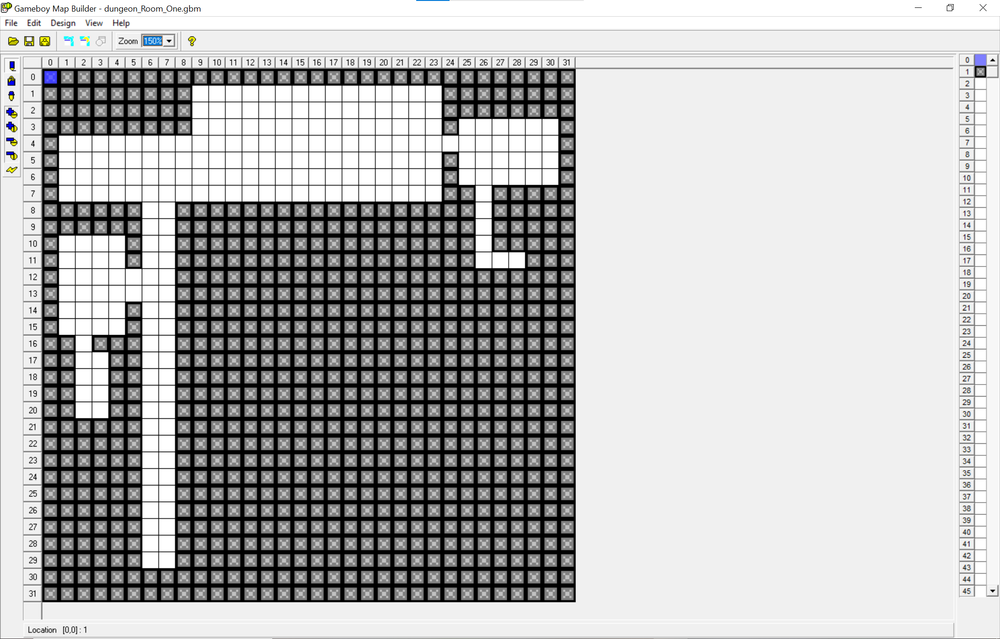
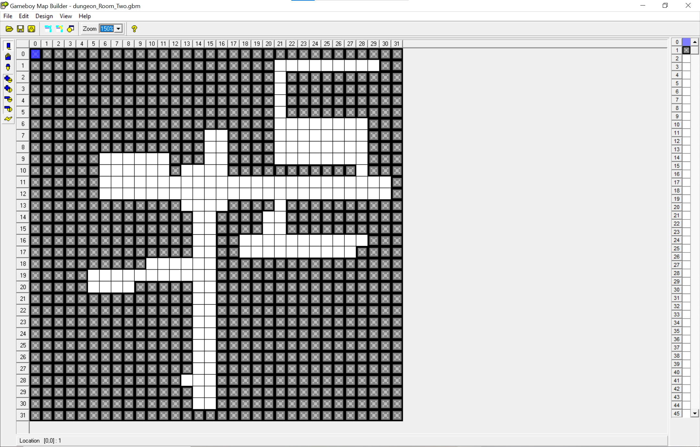
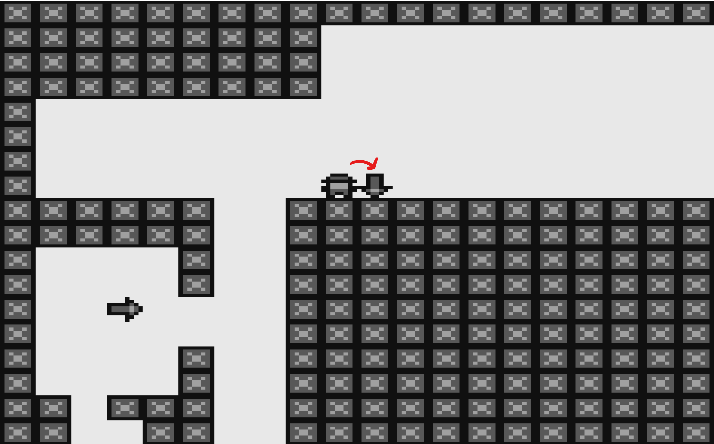
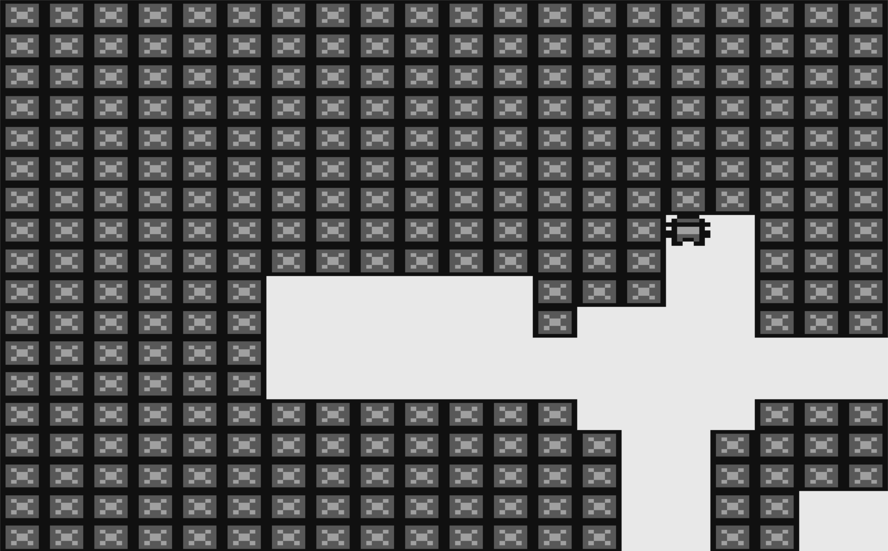

Complex Game Systems
Everything created, I am very proud of. Whether that would be something minimal, to the more complex and thought out of, it's something I love very much. The way of thinking for me is not straightforward. Creations tend to make themselves more complicated, ending up with something very complex. Sure, there may be an easier method of handling it, but to me, the easier method seems to be the more complex one. With this project, our goal was to create a complex system and implement it into a game. I decided to create a random procedurally generated dungeon crawler, or more of an attempt.
Recent Updates


Janurary 10th, 2020
- The last update before I decided to take a different approach to the random procedurally generated floor/room.
- Way things worked before was that the dungeon rooms were created by hand, then when the game began, a floor was created with different rooms placed into it.
- For testing purposes, you could select the size of a floor, and if the current room you were in had another room next to it, touching this arrow would send you to the next room.
- My new plan of approach would be to randomly create a room from scratch. From the room itself (each individual tile in a room), to the floor with all newly created rooms, would not only improve the quality of the game itself, but show the aspect of a complex game system.
December 18th, 2019
- Logic for the background to be scrolled has been implemented.
- The way it works is once the player has reached a certain distance on any edge of the screen, the game would check to see if there is anything else ahead of it.
- If so, the game would scroll the next set of background sprites to display, while removing the previous ones behind them.


December 15th, 2019
- This one was one of the more bigger challenges for this project, Figuring out how to store all the rooms into a floor and then using the player's position itself, and which room they are in, to transition to the next room they have chosen to go.
- With the way the game handles the transitioning from one room to another, before the player enters a room, the game will check to see if there is another room below, left, right, or above.
- If there is a room, the game will place an arrow in a random area in the room, before doing so, it would check to see if the spot it would be place at is not being occupied, if so, choose another place until it finds a spot.
- The arrow would indicate which room they would move to next.
More Information
Download
complex-game-systems.gb 32 KB
Installation Instructions
Grab a Game Boy emulator if you don't have one (bgb is a great emulator to use!). Download the .gb file, and load it in to your GameBoy emulator.
Repository Link
https://github.com/ASGitH/aie-Complex-Game-Systems
Tools Used
Backgrounds/Sprites/Tiles - Game Boy Map Builder & Game Boy Tile Designer
Developer Kit - Game Boy Development Kit
Emulator - BGB GameBoy Emulator